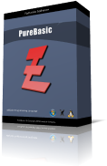

| Einführung | Neuigkeiten | Download | Screenshots | Bestellung | Support | FAQ | Links |
 PureBasic ist eine native 32 Bit und 64 Bit Programmiersprache basierend auf den bekannten BASIC Regeln.
Die Schlüsselfeatures von PureBasic sind seine Portierbarkeit (gegenwärtig werden Windows, Linux und MacOS werden
derzeit unterstützt), die Erstellung sehr schneller und hochoptimierter ausführbarer Programme und, natürlich,
die einfache BASIC Syntax. PureBasic wurde für Anfänger ebenso wie für Experten geschaffen.
Wir haben eine Menge Anstrengungen in ihre Realisierung gesetzt, um eine schnelle, zuverlässige und
systemfreundliche Sprache zu produzieren.
Trotz ihrer anfängerfreundlichen Syntax sind die Möglichkeiten mit PureBasic's fortgeschrittenen Features, wie Zeiger, Strukturen, Prozeduren, dynamisch verknüpfte Listen und vielem mehr, gewaltig. Fortgeschrittene Programmierer werden keine Probleme haben, Zugriff auf irgendwelche legale OS-Strukturen oder API-Objekten zu bekommen, PureBasic erlaubt auch Inline-ASM. Die Haupt-Merkmale von PureBasic: - Gewaltiges Angebot an internen Befehlen (1100+), um schnell und einfach Anwendungen oder Spiele erstellen zu können - Alle BASIC Schlüsselwörter werden unterstützt - Sehr schneller Compiler, welcher hochoptimierte Executables erzeugt - Keine externen DLLs, Runtime-Interpreter oder irgendetwas anderes werden beim Erstellen der Executables benötigt - Unterstützung von Prozeduren zum strukturierten Programmieren mit lokalen und globalen Variablen - Zugriff auf das volle OS API für fortgeschrittene Programmierer - Einfache & sehr schnelle Unterstützung für 2D-Spiele durch zugehörige Bibliotheken (DirectX, SDL, ...) - Einfache & hochqualitative 3D-Unterstützung basierend auf OGRE - Optimale Ausnutzung der verfügbaren Hardware durch Verwendung hochoptimierter (Asm) Befehle - Sourcecode ist portierbar zwischen Windows, MacOS X und Linux, für Spiele genauso wie für Anwendungen - Kombinierter Editor und Entwicklungsumgebung - Integrierter Debugger zum einfachen Aufspüren von Programmierfehlern. Spezielle OS-abhängige Features Windows Linux MacOS X Möchten Sie wissen, was andere Anwender über PureBasic denken ? Anwender-Meinungen |